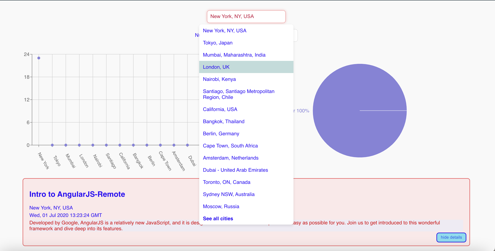
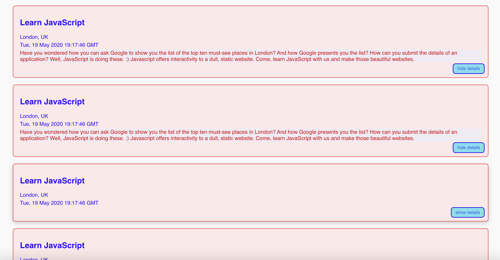
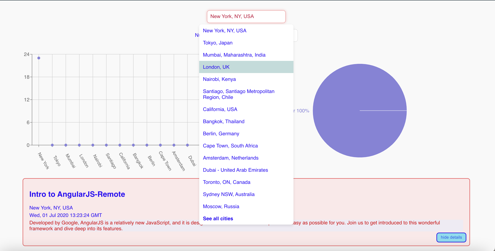
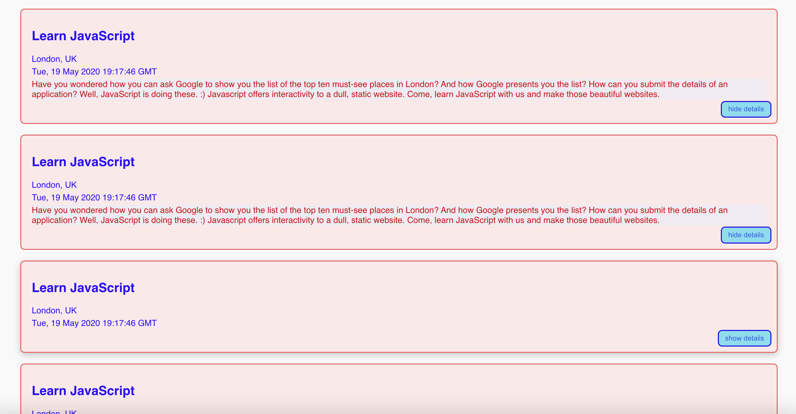

Meetup App
With this project I developed a PWA using React, and a test-driven development (TDD) approach. The application fetches the information of upcoming events from a Google Calendar API. The key features include filtering events by city, with specifying number of events, showing/hiding event details, offline functionality and charts for data visualisation.
I learnt in this project knowledge of server less functions, unit testing, user acceptance testing, continuous delivery, object-oriented programming, progressive web apps and data visualisation
Project Technology
- React
built using this - Google Calendar API
provides access to events and enables seamless integration with Google Calendar data. - AWS Lambda
this app uses server less architecture built by AWS Lambda, allows scalable and cost-effective execution for server-side code - Jest (Unit & Intergration testing) & Jest Cucumber
used for testing - Puppeteer
(end to end testing)
 


